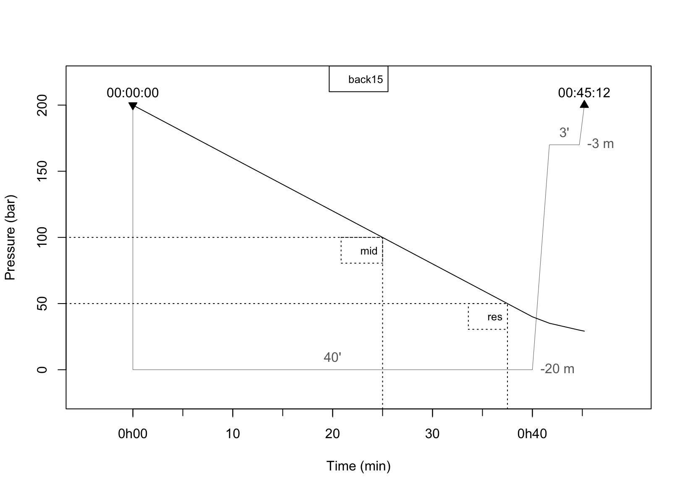

Gas consumption
Maxime Jaunatre
2021-03-07
gas_conso.RmdThe package {DiveR} provide functions to simulate gas consumption. It does so by using tank object and putting them in link with a dive curve and few parameters. This vignette will demonstrate the workflow to use tanks, for a dive with a single tank to using multiples ones on different setups.
Tank creation
A tank can basically be set by 2 important parameters : a volume vol and a pressure press. Other input are used to set rules to define when and where the tank can be used to breath.
Volume is set in litre and pressure in bar.
library(DiveR)
tank1 <- tank(vol = 12, press = 200)
tank1
#> $carac
#> vol press rule1 rule2
#> 12 200 100 50
#>
#> $typo
#> gas typ rule1 rule2 name
#> "Air" "back" "mid" "res" "back12"
#>
#> $limit
#> mind maxd t1 t2
#> 0 66 NA NA
#>
#> attr(,"class")
#> [1] "tank"We can see that many values are set by default, the principal one being the gas type. At this time only air is used and thus tanks are limited between the surface (0) and 66m of depth.
Default rules are also set, which will message the user when the tank is half empty, 3/4 empty and when there is no gas left in it. You can set them like below, and name the rules too.
# set in percentage
tank2 <- tank(vol = 12, press = 200,
rules = list(rules = c('mid' = 50, 'quarter' = 25), sys = '%'))
rules(tank2)
#> mid quarter
#> 100 50
# set in bar
tank3 <- tank(vol = 12, press = 200,
rules = list(rules = c('return' = 130, 'end' = 80), sys = 'bar'))
rules(tank3)
#> return end
#> 130 80Tank types
By default, the tank type is set to back, a category to describe back-mounted tanks commonly used by divers. However it is possible to have tanks dedicated to specific usage in a relay or at the end of a dive.
Relay tank
A tank used at the beginning and the end of a dive. Mostly used in cave diving. This type is attributed to tanks where there is an interdiction of usage between 2 times.
The easier way to input this interdiction is to set the two rules at same value. During the dive, the tank will be used until pressure match 120b. Then the diver will use other tanks up to their second rules (ex : back tank reserve at 50b). When done, the diver will get back to the relay tank to finish the dive with it.
relay <- tank(vol = 12, press = 180, typ = 'relay',
rules = list(rules = c('gap' = 120, 'end_gap' = 120), sys = 'bar'))As these tanks are used in combination with a back-mounted tank, their usage will be described in the multiple tank usage part. The algorithm of usage will be described, don’t fear not understanding it right now.
Tank methods
The parameters of a tank can be retrieved with specified function. We can find the volume, pressure and rules of any tank. All these informations are grouped in a summary function
Tank consumption
Once the tanks are defined, you can combine them with a dive. The conso function will then compute how many gas the diver will consume by following the dive depth curve and report pressure at different times of the dive. The function will also catch times where the rules of a tank are met. Note here that a new rules about air failure is added to each tank to report when a tank is empty.
If no tanks are available (pressure > 0) at some time, the function will return warnings to highlight these times.
For the following examples, we will use a single dive of 40 minutes at 20 meter. There is one desaturation stop for 3min at 3m.
simp_dive <- dive(depth = 20, time = 40, secu = TRUE)
summary(simp_dive)
#> Dive for : 40 minutes at 20 meters
#> Total dive time is 45.2 with a dive ascent of 5.2 minutes
#> 1 stops : 3 minutes at 3 meters
#> The dive group is HFor multiple dives you need to choose one of the two dives. A special case for consecutive dives is at work.
Single Tank
First we try to use a tank with a volume of 12L at 200 bar. The diver will breathe 20L/min, which is the default value of the function.
A rapid observation of the consumption if possible by plotting the consumption object. We can easily see when the pressure met the rules and when the diver died (40min). This was also printed in warnings with specified times with missing gas.
Tank_12L <- tank(vol = 12, press = 200)
death <- conso(dive = simp_dive, tank = Tank_12L,
cons = 20, failure_label = 'Air failure')
#> Warning in conso(dive = simp_dive, tank = Tank_12L, cons = 20, failure_label =
#> "Air failure"): No tank is available between 40 and 41.7 minutes so you died.
#> Try again !
#> Warning in conso(dive = simp_dive, tank = Tank_12L, cons = 20, failure_label =
#> "Air failure"): No tank is available between 41.7 and 44.7 minutes so you died.
#> Try again !
#> Warning in conso(dive = simp_dive, tank = Tank_12L, cons = 20, failure_label =
#> "Air failure"): No tank is available between 44.7 and 45.2 minutes so you died.
#> Try again !
plot(death, line_print = FALSE)Once we observed this, we can solve the issue by using a different tank for example. Here we will increase the volume to 15L to get more air during the dive. Note that we could also increase the pressure of the precedent tank. Another solution could be to breath less and using a diver using cons = 15.
This solution work and the diver get to the end of the dive alive ! Hourra !
Tank_15L <- tank(vol = 15, press = 200)
viable <- conso(dive = simp_dive, tank = Tank_15L,
cons = 20, failure_label = 'Air failure')
plot(viable, line_print = FALSE)
Consumption attributes
Now that we have simulated both consumption on the same dive, we may want to find more information about the simulations, which will help us dive safely.
First we can check the pressure at the end of the dive. This can be helpful to see if the diver can still be alive. Here we see that effectively in the death simulation, the tank was empty at the end of the dive.
pressure(death)
#> back12
#> 0However this does not tell us when this happened. To find out when, we can check when the rules have been met with the rules function. This will help us check the dive instructor interdiction to use the reserve of the tank (here 50bar) in both simulations.
rules(death)
#> rule1 name1 time1 rule2 name2 time2 empty nameE timeE
#> back12 100 mid 20 50 res 30 0 Air failure 40
rules(viable)
#> rule1 name1 time1 rule2 name2 time2 empty nameE timeE
#> back15 100 mid 25 50 res 37.5 0 Air failure NASo, here, despite the diver in viable make it alive to the end of the dive, he didn’t respect the second rule of ending the dive with 50 bar at the end.
Finally we can find all information in a summary.
summary(death)
#> Consumption simulated on dive at 20 m for 45.2 minutes
#> ---------------------------------------------------------------------
#> Tank name | Rule | Pressure | Time | Final pressure
#> ---------------------------------------------------------------------
#> Tank back12 | mid | 100 bar | 20 min | 0 bar
#> | res | 50 bar | 30 min |
#> | Air failure | 0 bar | 40 min |
#> ---------------------------------------------------------------------
#> The dive is deadly !
summary(viable)
#> Consumption simulated on dive at 20 m for 45.2 minutes
#> ---------------------------------------------------------------------
#> Tank name | Rule | Pressure | Time | Final pressure
#> ---------------------------------------------------------------------
#> Tank back15 | mid | 100 bar | 25 min | 29.16 bar
#> | res | 50 bar | 38 min |
#> | Air failure | 0 bar | NA min |
#> ---------------------------------------------------------------------
#> The dive is viable !Multiple Tank
To respect all rules broken before in this vignette we could use even larger tank or dive a shorter time. An other option could be to use multiple tanks.
This is done by simply giving a list of tanks to the conso function.
Below is an example of 2 independant 10L tanks used by the function. For better understanding, it is better name them.
A_10L <- tank(vol = 10, press = 200, name = 'A_10L')
B_10L <- tank(vol = 10, press = 200, name = 'B_10L')
bi_conso <- conso(dive = simp_dive, tank = list(A_10L, B_10L),
cons = 20, failure_label = 'Air failure')
plot(bi_conso, line_print = FALSE)
pressure(bi_conso)
#> A_10L B_10L
#> 50.00 93.74We managed to get to the end of the dive alive and with no tank below 50 bar !
The plot make it look messy but illustrate the algorithm written to used multiple tanks.
The tanks are used by their order in the list provided.
The tanks are used until they reach a rules. At this rule, the diver will switch to the next tank available before it’s first rule.
It check tank availability at each time (not showed in this example).
By using these simple rules, you can set diverse multiple tanks configurations.
One relay and back tank
We want to design a dive where we start on a relay tank (named Relay) up to a third of the pressure, then consume our back tank (named Tank_10L). Once the latter cross the second rule (or reserve), we finish the dive with the Relay.
Relay <- tank(vol = 10, press = 200, typ = 'relay', rules = list(
rules = c(' ' = 66, 'drop relay' = 66),
sys = '%'), name = "Relay"
)
Tank_10L <- tank(vol = 10, press = 200, rules = list(
rules = c('Return' = 100, "Reserve" = 50),
sys = "bar"), name = "Back"
)
relay_conso <- conso(dive = simp_dive,
tank = list(Relay, Tank_10L),
cons = 20, failure_label = 'Air failure')
plot(relay_conso, line_print = FALSE)
summary(relay_conso)
#> Consumption simulated on dive at 20 m for 45.2 minutes
#> ---------------------------------------------------------------------
#> Tank name | Rule | Pressure | Time | Final pressure
#> ---------------------------------------------------------------------
#> Tank Relay | | 132 bar | 11 min | 93.74 bar
#> | drop relay | 132 bar | 11 min |
#> | Air failure | 0 bar | NA min |
#> ---------------------------------------------------------------------
#> Tank Back | Return | 100 bar | 28 min | 50 bar
#> | Reserve | 50 bar | 36 min |
#> | Air failure | 0 bar | NA min |
#> ---------------------------------------------------------------------
#> The dive is viable !With this configuration we still have our reserve on our back tank, and lot of gas in our relay. Note that because the relay is still available between it’s drop and the back tank reserve, a full line is drawn